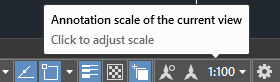

Scala tratteggi
Per avere tratteggi omogenei tra diverse viewport, di diversa scala, su uno stesso layout, ci sono da settare una serie di variabili che, volendo, potete predisporre in un comando da menù:
^C^CMSLTSCALE;1;PSLTSCALE;1;CELTSCALE;1;
A questo punto la scala generale dei tratteggi del file è regolata da un'unica variabile LTSCALE e dalla scala di visualizzazione della viewport (model incluso).

MSLTSCALE
Scales linetypes displayed on the model tab by the annotation scale.
Type: Integer
Saved in: Drawing
Initial value: 1
PSLTSCALE
Controls the linetype scaling of objects displayed in paper space viewports.
Type: Integer
Saved in: Drawing
Initial value: 1
The linetype scale for non-continuous linetypes can be set to depend on either the magnification scale of each layout viewport, or uniformly, based on the overall scale of paper space. Different layout tabs can have different settings for PSLTSCALE.
CELTSCALE
Sets the current object linetype scaling factor. Type: Real
Saved in: Drawing
Initial value: 1.0000
Sets the linetype scaling for new objects relative to the LTSCALE command setting. A line created with CELTSCALE = 2 in a drawing with LTSCALE set to 0.5 would appear the same as a line created with CELTSCALE = 1 in a drawing with LTSCALE = 1.
questo approccio impedisce di usare i tipi-linea bidimensionali, quelli che hanno uno "spessore" come batting, zigzag o track in quanto scalerebbero diversamente nelle diverse viste, purtroppo si perde completamente il controllo sull'altezza delle medesime.